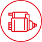
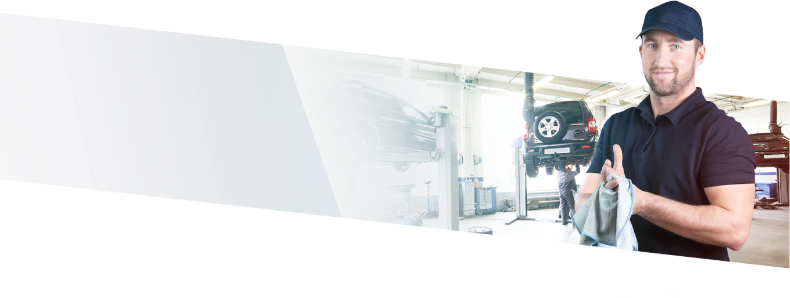

Забезпечимо
запчастинами вашу СТО

Широкий асортимент
агрегатів та компонентів
агрегатів та компонентів
Зрозуміла цінова політика
Гнучкі індивідуальні
умови оплати
умови оплати
Гарантійна підтримка
Онлайн-платформа з підбору
агрегатів та компонентів
агрегатів та компонентів
Забезпечимо ефективну роботу вашого СТО
Спеціальне обладнання
та
інструмент для СТО
стар-ген групи
та
інструмент для СТО
стар-ген групи
Унікальне обладнання
для діагностики стартерів, генераторів
для діагностики стартерів, генераторів
Технічна підтримка вашого бізнесу — консультації,
навчання майстрів
навчання майстрів
Аналітична підтримка
вашого бізнесу — формування складських запасів конкретно під потреби регіону
вашого бізнесу — формування складських запасів конкретно під потреби регіону
Логістична підтримка
вашого бізнесу — доставка запчастин та інше
вашого бізнесу — доставка запчастин та інше
Маркетинг-підтримка
Вашого бізнесу
Вашого бізнесу
